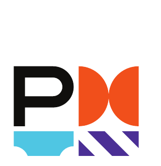

Education & Professional Certifications
Credentials
Bachelor of Financial Management
Imam Muhammad Ibn Saud Islamic University — Riyadh, Saudi Arabia

Project Management Professional (PMP)Project Management Institute
Certified International Supply Chain Professional (CISCP)Supply Chain Certification
Certified International Supply Chain Manager (CISCM)Supply Chain Certification
Arabic — Native
English — Professional